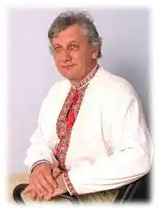

Білокопитов Микола Григорович (11 лютого 1954 року, Мелітополь) — поет-сатирик, критик, журналіст. Лауреат премій імені Степана Руданського та Остапа Вишні.
11 лютого 1954 року, в місті Мелітополі Запорізької області народився Микола Білокопитов. Та малий Миколка мав і свою малу Батьківщину — селище Кушугум Запорізького району, де пройшло його дитинство й де він закінчив середню школу. Потім була служба в армії — саме на флоті. Повернувшись "на гражданку" юнак подався працювати слюсарем, потім був залізничником та поліграфістом.
Саме останній фах (поліграфіста) й змінив кардинально долю запоріжського юнака. Спершу боло направлення на навчання до Львівського Українського поліграфічного інституту ім. Івана Федорова, якого він успішно закінчив за спеціальністю "Журналістика, літературний редактор". Потім, набравшись наук, щоби здійснити свою зі своїх мрій, Микола Білокопитов подався в журналістику — якій віддав багато років свого життя. Він працював у газетах "Комсомолець Запоріжжя", "Запорізька правда", "Запорозька Січ", "Світло Оріяни". Та була ще одна мрія Миколи — писати, адже ще перші проби пера він зробив ще у шкільні роки. Навчаючись у 8 класі, опублікував свої вірші в районній газеті "Червоний промінь", вже згодом, його твори з'являються в обласних газетах "Комсомолець Запоріжжя" і "Запорізька правда". Потім було захоплення сатирою, а відтак, гуморески, байки, мініатюри друкуються в журналах "Старт", "Ранок", "Україна" і, звичайно ж, в "Перці". Публікуються його твори також в "Літературній Україні", колективних збірниках і навіть закордоном — в гумористичному журналі "Всесміх" (що виходить в Канаді). Автор книжок сатири і гумору: Член Національної Спілки письменників України з 1996 року. За свої творчі успіхи він був визнаний Лауреатом премій імені Степана Руданського та Остапа Вишні.